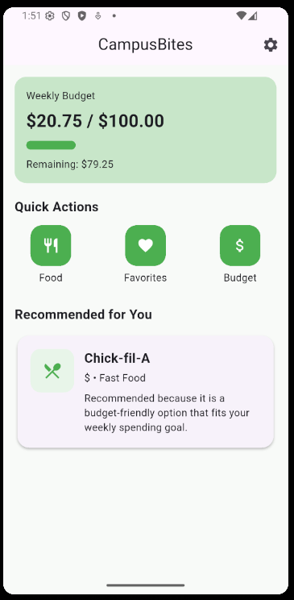
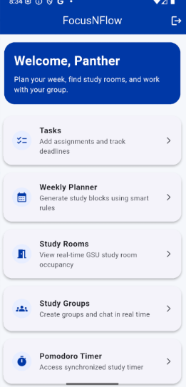

My Projects
This page highlights some of the projects I have worked on while learning software development.
These projects helped me practice programming, web development, mobile app development, and database design.
Each project helped me build stronger problem-solving skills and gave me more experience creating useful applications.
Company HR/Employee Login System

The Company HR/Employee Login System was designed to help an HR admin department manage employee data and payroll records.
It also allows general employees to view their own information and pay history. This project helped me understand database design, user roles, and how software can organize important company information.
CampusBites

The CampusBites App is a mobile applicaiton designed to help students browse and search restaurants by name, filter by cuisine type and price range, add edit and delete
restaurants with the implementation of CRUD, save favorites for quick access, leave star ratings and written reviews, also track weekly food expenses, set a custom weekly budget goal,
and get a smart budget-friendly recommendation right on the dashboard
FocusNFlow

The FocusNFlow App is a mobile application that provide students a way to stay organized and focused in school. The mobile application prioritizes tasks intelligently, tracks productivity, and enables collaborative studying.
By offering task management, a study planning engine, real-time study room occupancy, study groups with live chat, study session scheduling, a shared Pomodoro timer, and Firebase Cloud Messaging support.